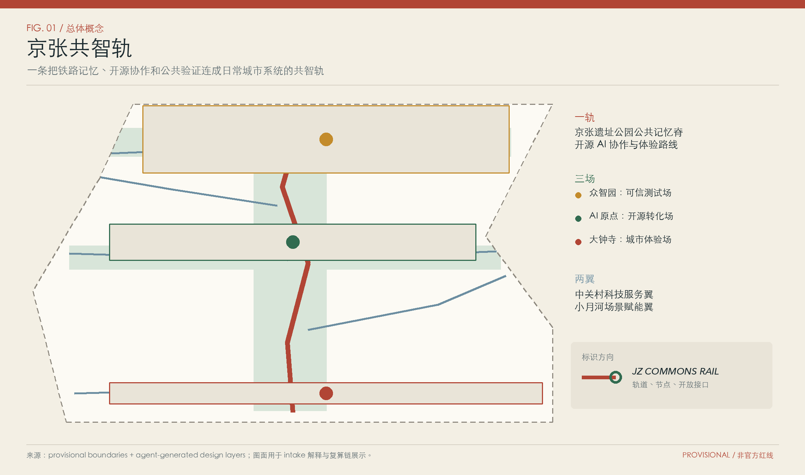
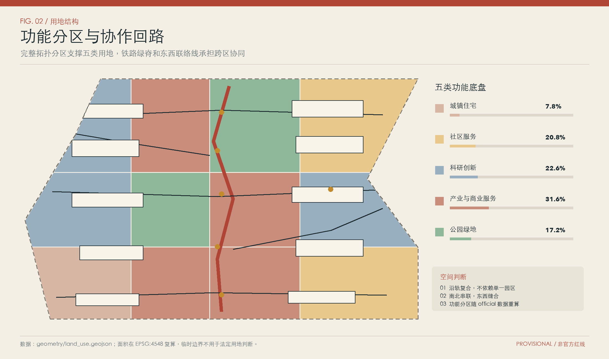
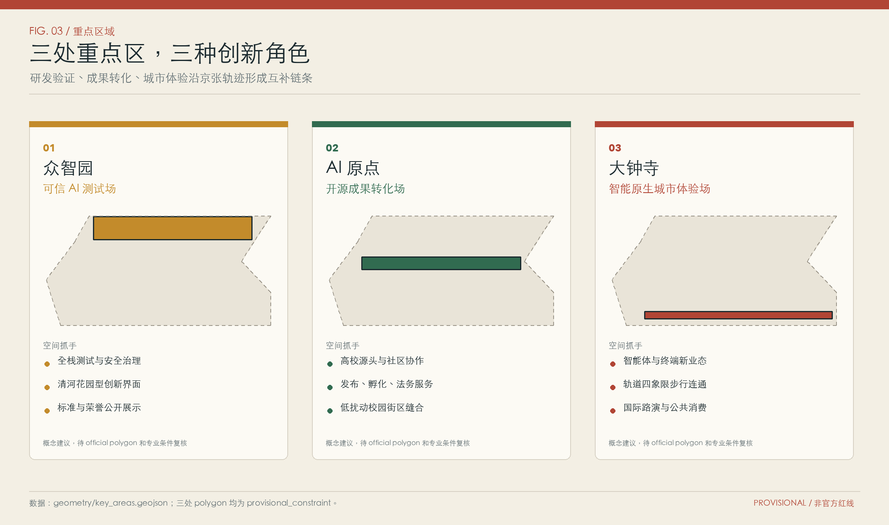
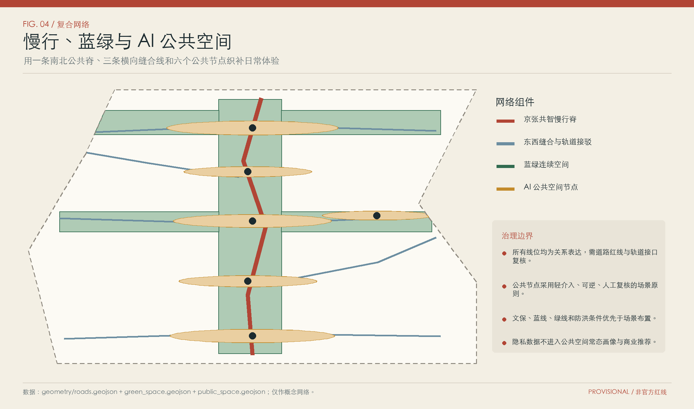
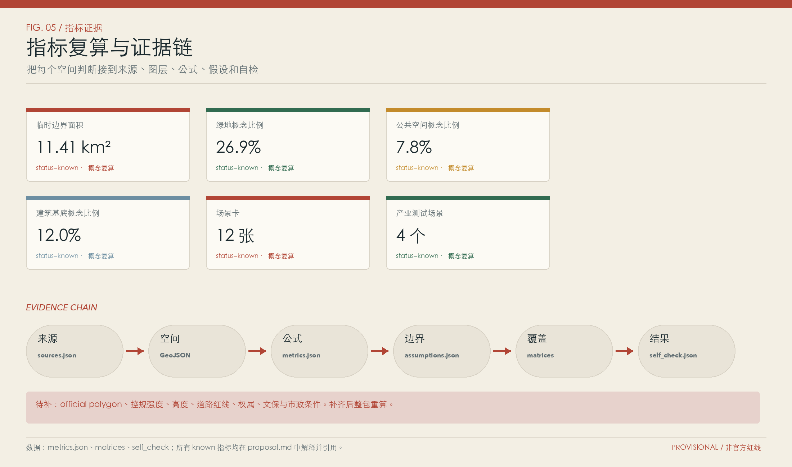

众智园
全栈测试、安全治理、标准展示与清河创新花园。
把百年京张铁路的开放、连接和公共记忆，转译为一条可验证、可复用、可由专业团队继续深化的 AI 城市共同体。方案以一轨三场两翼组织研发测试、成果转化、公共体验与长期运营。
三层范围从产业策略进入总体城市设计，再进入三处重点区。用地分区、建筑原型、交通慢行、蓝绿公共空间和更新项目均由同一临时边界派生。


众智园承担可信测试，AI 原点承担开源成果转化，大钟寺承担智能原生城市体验。三场由京张公共脊串联，并接受中关村科技服务翼与小月河场景赋能翼支撑。
全栈测试、安全治理、标准展示与清河创新花园。
高校策源、开源协作、孵化转化与人才日常服务。
智能体新业态、城市消费、国际路演与站城步行缝合。

每个场景都绑定服务对象、空间载体、最少数据、人工复核与退出机制。标注“产业测试”的 4 项仅作为受控沙盒概念，不代表已批准部署。
授权样本在隔离环境运行，结论由评测人员签署。
采用脱敏订单与设备状态，异常时切回人工调度。
只读公开仓库和授权材料，发布前由贡献者确认。
处理企业主动提交的问题，政策解释由服务人员复核。
使用公开路网与现场核验数据，保留人工报错入口。
只发布分区级聚合信息，现场管理人员决定限流。
识别设施维护线索，工单由专业人员核验。
使用团队授权的成果简介，法务与投资建议由专业人员提供。
收集完成服务所需的最少信息，支持撤回与删除。
内容来自清权资料库，文化事实经策展人员复核。
对公开意见做主题聚合，原始意见和少数观点均可查。
采用合成或脱敏数据，任何处置建议由责任人员确认。

指标值从 geometry 复算，合规覆盖由 compliance_matrix、standard_matrix 和 design_depth_matrix 定位。自检状态最终以 self_check.json 为准。

公告 1.3、1.4、1.5 共 17 项，agent.1 至 agent.6 共 6 项。专业标准与 15 项 design depth 均建立章节、图层、指标、图纸、来源、假设和 self-check 对应关系。
23 requirements · 6 standards · 15 depth items
来源只用于登记允许的任务。provisional geometry 支持 intake 生成和可视化，不能升级为 official redline 或法定控制。
OFFICIAL ANNOUNCEMENT项目目标、三层范围文字、公告面积与设计任务。AGENT TASKBOOK六项智能体任务、场景、品牌、运营与合规边界。PROFESSIONAL STANDARDS城市设计、控规语言和用地分类原则。PROVISIONAL BOUNDARIES临时生成、拓扑检查、图纸与离线展示。A-BOUNDARY-001official polygon 发布后整包重算。A-CONTROLS-001容积率、高度、密度和退线保持未知。A-TRANSPORT-001交通线位只表达关系，不作工程判断。A-HERITAGE-001公共空间和地标需文保、蓝绿与安全复核。